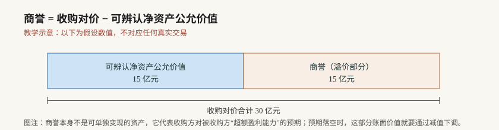
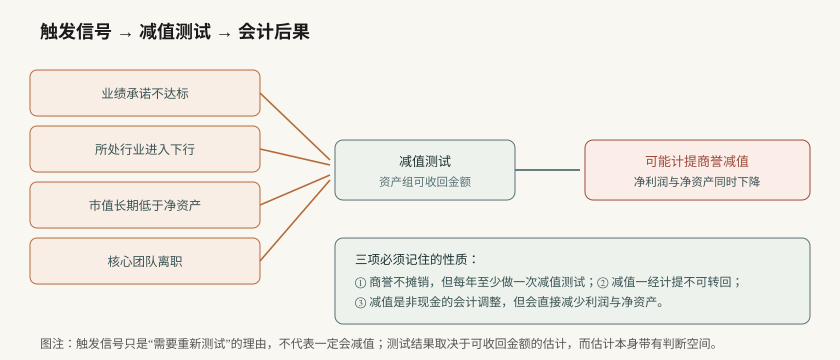

并购与商誉：溢价如何变成减值
商誉是收购对价里“超出可辨认净资产公允价值”的那部分。它不摊销、每年至少做一次减值测试、减值不可转回——这三条决定了它会静默很久，然后在某一年一次性压低利润与净资产。
商誉从哪来
企业合并中，收购方支付的对价往往高于被收购方可辨认净资产的公允价值。差额就是商誉：它代表收购方预期被收购方未来能带来超出其可辨认净资产的回报——品牌、客户关系、技术、团队等。

为什么商誉值得单列一节？因为它改变了报表的时间结构：收购当期利润不动，商誉静静趴在资产负债表上；一旦减值，又几乎全部落在某一年。对分析者来说，它是一笔“延后确认的预期”。
商誉的确认与后续计量
几个容易混的细节：
- 同一控制下的企业合并按权益结合法处理，通常不产生商誉，对价与账面净资产份额的差额调资本公积（或留存收益），因此想找“并购溢价”不能只看商誉是否出现。
- 差额为负时形成负商誉，经复核后计入当期损益，而不是挂在资产方。
- 商誉不摊销，但每年至少进行一次减值测试；这与国际准则的处理一致。
- 商誉不能单独产生现金流，减值测试时须并入相关的资产组或资产组组合。
- 减值一旦计提不可转回，且不得通过后续处置反向确认增值。
需要强调：具体确认与计量规则以《企业会计准则第20号——企业合并》《企业会计准则第8号——资产减值》为准，本页只做概括，不代替准则原文。
减值测试与触发信号
减值测试的逻辑是：比较资产组（含商誉）的可收回金额与账面价值，前者低于后者时计提减值。可收回金额取“公允价值减处置费用”与“预计未来现金流量现值”两者中的较高者——后者正是第 19 章 DCF 思想在减值测试中的应用，同样依赖假设。

四种常见的触发线索：
- 业绩承诺不达标：连续未达标是最直接的信号，但也要看未达标的原因与后续补偿安排。
- 行业进入下行：即使当期业绩尚可，行业需求或政策转向也会降低未来现金流预期。
- 市值长期低于净资产：提示市场对账面资产（含商誉）的估值打了折扣，但两者口径不同，不能机械等同。
- 核心团队离职：对被收购方而言，人才本身就是溢价的一部分。
从行业分布看，传媒、计算机、医药、制造等并购活跃、商誉占比高的领域历史减值较为集中；但这只是经验观察，不能用行业的“普遍风险”代替对具体公司资产组的核对。
对赌协议的风险
并购中常见的业绩补偿安排，要求被收购方在未来若干年实现约定的净利润，未达则用股份或现金补偿。它看起来保护收购方，但会让被收购方在承诺期内有强烈的动机“做出”达标数字。
| 年度 | 承诺净利润（万元） | 实际净利润（万元） | 完成率 |
|---|---|---|---|
| 第 1 年 | 1,000 | 1,005 | 100.5% |
| 第 2 年 | 3,000 | 3,012 | 100.4% |
| 第 3 年 | 5,000 | 4,690 | 93.8% |
上表为教学示意。值得警惕的不是“是否恰好达标”，而是“达标是怎么来的”：
- 提前确认收入：应收增速远高于收入增速，或期末大额销售集中出现。
- 推迟费用：研发投入、广告营销、维修与人员费用被压缩，代价在承诺期后集中体现。
- 承诺期后断崖：承诺期最后一年利润率显著高于同业水平，随后大幅回落。
- 管理层变动：承诺期满后核心团队离职，接手的经营压力先于减值信号出现。
因此分析对赌不能只看“完成率”，而要看完成的质量：现金流量是否跟得上、应收与存货是否异常、承诺期后的第一年发生了什么。
分拆上市与价值判断
与并购相反，分拆上市（Spin-off）把子公司或业务板块单独推向市场。常见动机有三类：
- 价值重估：集团整体估值可能低于各板块估值之和（即所谓“集团折扣”），分拆后市场可能给子公司更高的倍数。
- 聚焦主业：业务过于分散时市场难以定价，分拆使各板块边界更清晰。
- 融资需求：子公司可独立融资，不必与母公司争夺资金。
有两个需要分清的点：一是会计上，母公司丧失控制权时需按公允价值重新计量剩余股权，可能确认一次性损益，这会直接扭曲当期利润，需与经常性经营利润分开看；二是权益上，母公司股东并非“免费获得新资产”——分拆通常按持股比例分配或认购，且新股发行会稀释持股。
动机不能只看利好：分拆既可能是释放价值，也可能是把高估值资产拆出融资、把低质量资产留在母公司。判断时要看分拆后母子公司的业务、关联交易、同业竞争安排以及配套融资条款。
商誉占比工作台
默认演示（商誉 30 亿元、归母净资产 50 亿元、总资产 120 亿元）可手工复算：商誉/净资产 = 60%，商誉/总资产 = 25%。两个分母含义不同，不能混用。
修改数据，即时复算
三个金额需同一时点、同一合并口径；如需与同业比较，需先确认对方是否含少数股东权益。
比例高低本身不是结论。“商誉超过净资产多少就危险”之类的固定阈值都是经验判断，不是准则或监管标准；实务上应把它与资产组业绩、承诺完成质量、现金流一起看。
核查清单与自测
区分合并类型：非同一控制可能产生商誉，同一控制通常不产生。
核对商誉所属资产组、初始确认依据与每期减值测试披露。
把商誉占净资产与占总资产分别看清，并改成同比与同业口径。
对赌项目：看完成质量（现金流、应收与存货），而不只看完成率。
分拆与一次性损益：与经常性经营利润分开看，留意稀释与关联交易。
自测一：商誉减值当年净利润大跌，是否说明公司经营恶化？
不一定。减值是非现金的会计调整，可能对应很久以前的收购溢价；需分开看经营利润与减值，并看被收购资产组当下的实际业绩与现金流。
自测二：分拆上市后母公司股东是否“白得了”一份新资产？
不能这么说。分拆通常按持股比例分配或认购，新股发行也可能稀释；价值变化取决于分拆后两家公司各自的业务、估值与融资安排。
结论：商誉分析的关键是把“收购时的预期”与“现在的现实”分开：看资产组是否还在赚预期的钱、减值测试用了什么假设、承诺期内外的业绩为什么变了。
依据与边界
本页所有数字与图例均为教学示意，不指向任何真实公司或真实交易，也不构成投资建议。
商誉的确认与计量以《企业会计准则第20号——企业合并》为准，减值以《企业会计准则第8号——资产减值》为准，合并与合并报表相关安排以《企业会计准则第33号》为准；分拆相关会计与披露以现行准则及监管规定为准。具体条文以财政部发布的最新版本为准。